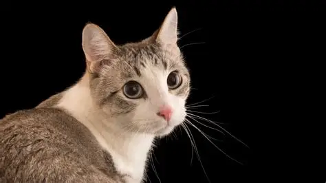

CatCSS

A cat is a small, graceful animal known for its soft fur, sharp claws, and curious nature. It often moves with quiet elegance, whether it’s playfully chasing after a toy or lounging in a sunny spot. Cats are independent yet affectionate, showing love in gentle purrs and head nudges.